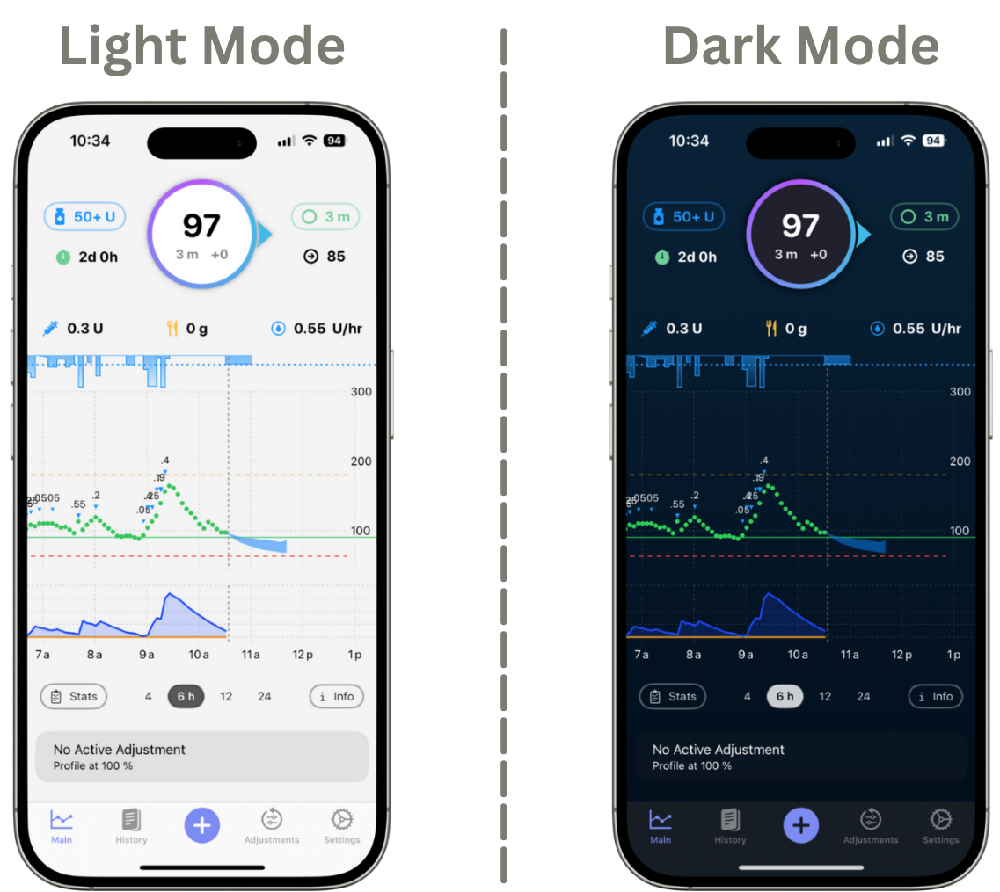
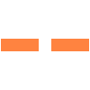
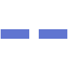

Appearance
Default: System Default
Options
System Default:
This option follows the phone's current color scheme.
Light:
Always in Light Mode
Dark:
Always in Dark Mode
Glucose Color Scheme
Default: Static
Options
Static:
This option uses orange, green, and red to indicate where the glucose reading falls on the range set.
Threshold Graph Legend

High Threshold
Low Threshold
:fontawesome-solid-circle: Above Range Glucose
:fontawesome-solid-circle: In Range Glucose
:fontawesome-solid-circle: Below Range Glucose

Dynamic:
This option uses the color wheel to indicate where the glucose reading falls in relation to your target glucose.
*The colors of the threshold lines are also dynamic, so the exact coloring will depend on your settings
Threshold Graph Legend

High Threshold (=180 mg/dL)
Low Threshold (=70 mg/dL)
Above Target

At or Near Target
Below Target

Axis Grid Lines
Show X-Axis Grid Lines
Default: ON
Choose whether or not to display the X-Axis (horizontal) grid lines on the glucose graph.
Show Y-Axis Grid Lines
Default: ON
Choose whether or not to display the Y-Axis (vertical) grid lines on the glucose graph.
Show Low and High Thresholds
Default: ON
This setting displays the upper and lower values for your glucose target range.
Low Threshold
Default: 70 mg/dL (3.9 mmol/L)
The lower value of your displayed glucose target range.
High Threshold
Default: 180 mg/dL (10mmol/L)
The upper value of your displayed glucose target range.
Tip
This range is for display and statistical purposes only and does not influence insulin dosing.
Forecast Display Type
Default: Cone
This setting allows you to choose between the Cone of Uncertainty (Cone) and OpenAPS Forecast Lines (Lines) for the glucose forecast display. Descriptions for each option found below.
Options
Cone (of Uncertainty):
Combines all possible forecasts from the OpenAPS lines into a single range. This option has been shown to reduce confusion and stress around algorithm forecasts by providing a clearer, less overwhelming visual representation.
Lines:
Uses the IOB, COB, UAM, and ZT forecast lines from the OpenAPS (Oref) Algorithm used in Trio. This option provides a more detailed view of the algorithm's forecast and may be more or less helpful depending on the user's preference.
eA1c Display Unit
Default: Percent
Choose which format you'd prefer the eA1c (estimated A1c) value to be displayed as. Choose between percentage (Ex: 6.5%) or mmol/mol (Ex: 48 mmol/mol).
Options
Percent or mmol/mol
Show Carbs Required Badge
Default: OFF
Turning this on will show the grams of carbs needed to prevent a low as a notification badge on the Trio home screen, located above the main icon.
Carbs Required Threshold
If Show Carbs Required Badge is enabled, this setting will appear. Set this to the lowest number of carbs you'd like to be recommended. A recommendation will not be given if the carbs required is below this number.
Tip
The carbs suggested with this feature are to be used as a recommendation, not as a requirement. Depending on the current accuracy of your sensor and the accuracy of your settings, the suggested carbs can vary widely from what is actually required. Ultimately, use your best judgment before ingesting the suggested quantity of carbs.